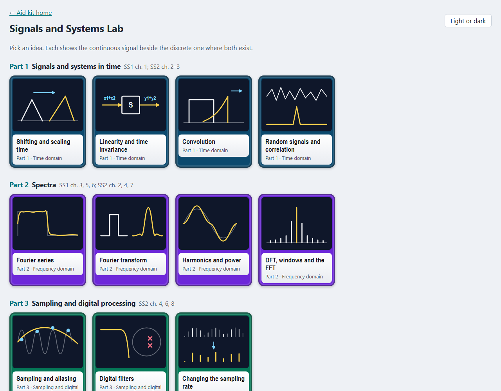
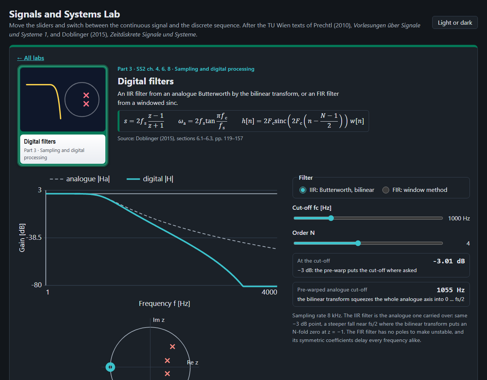
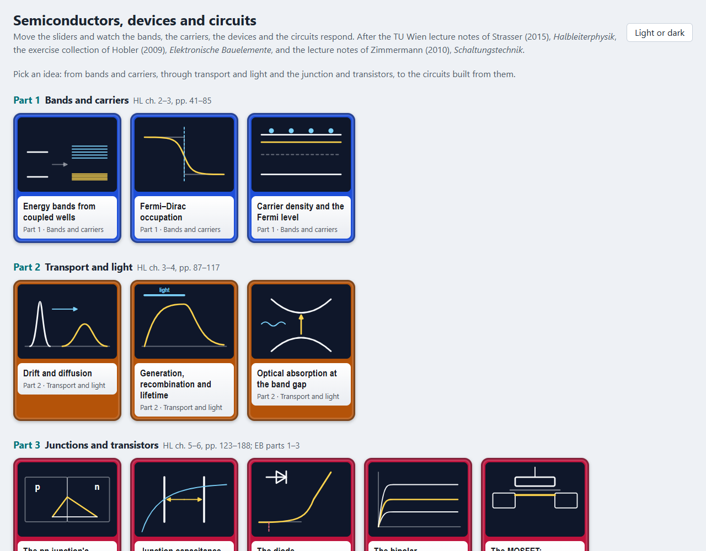
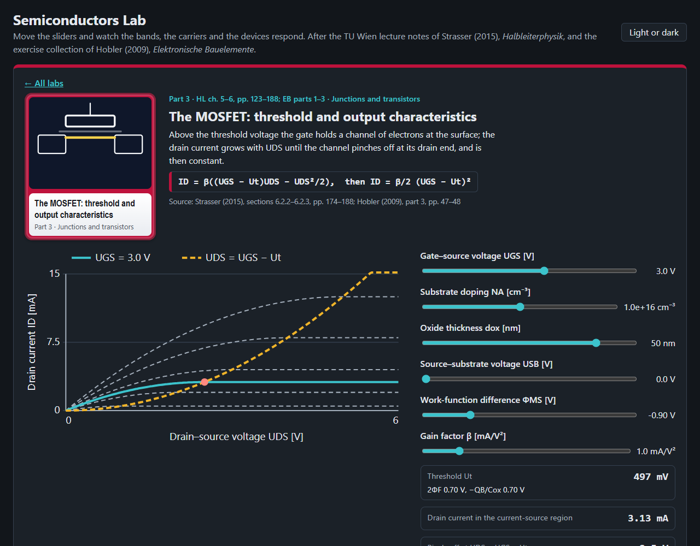
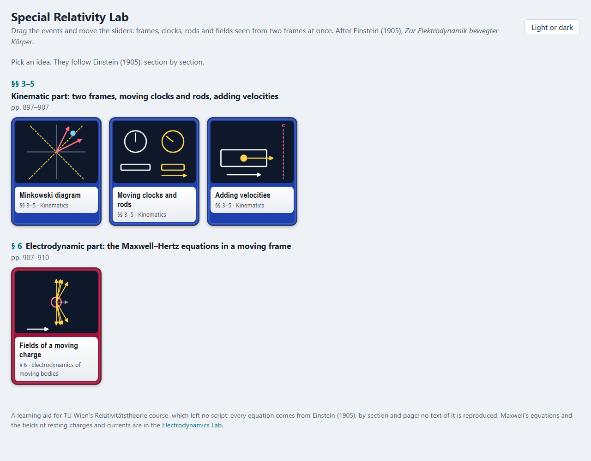
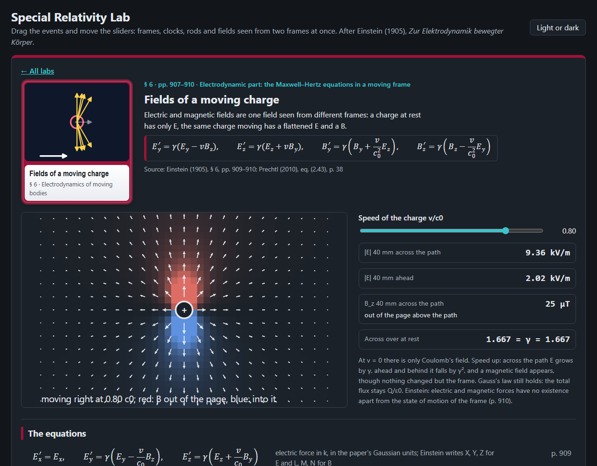
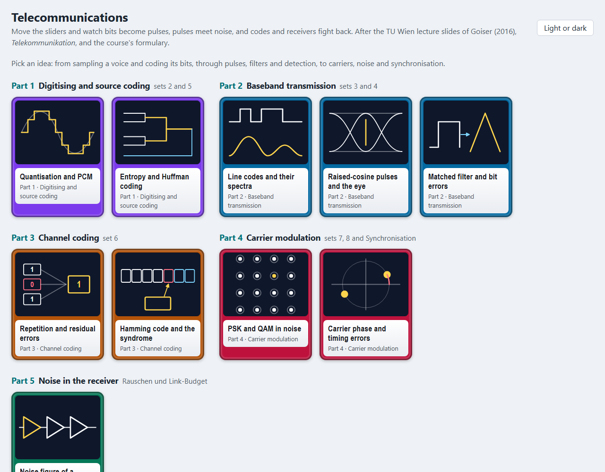
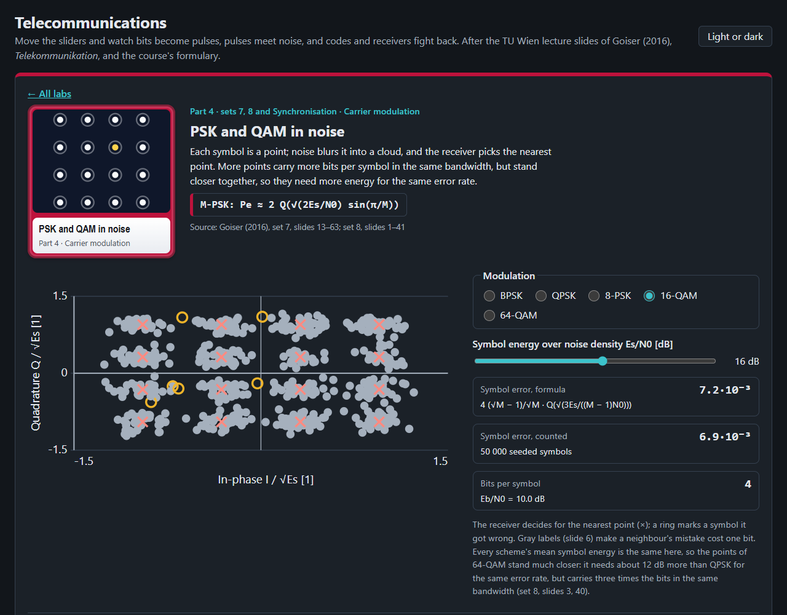
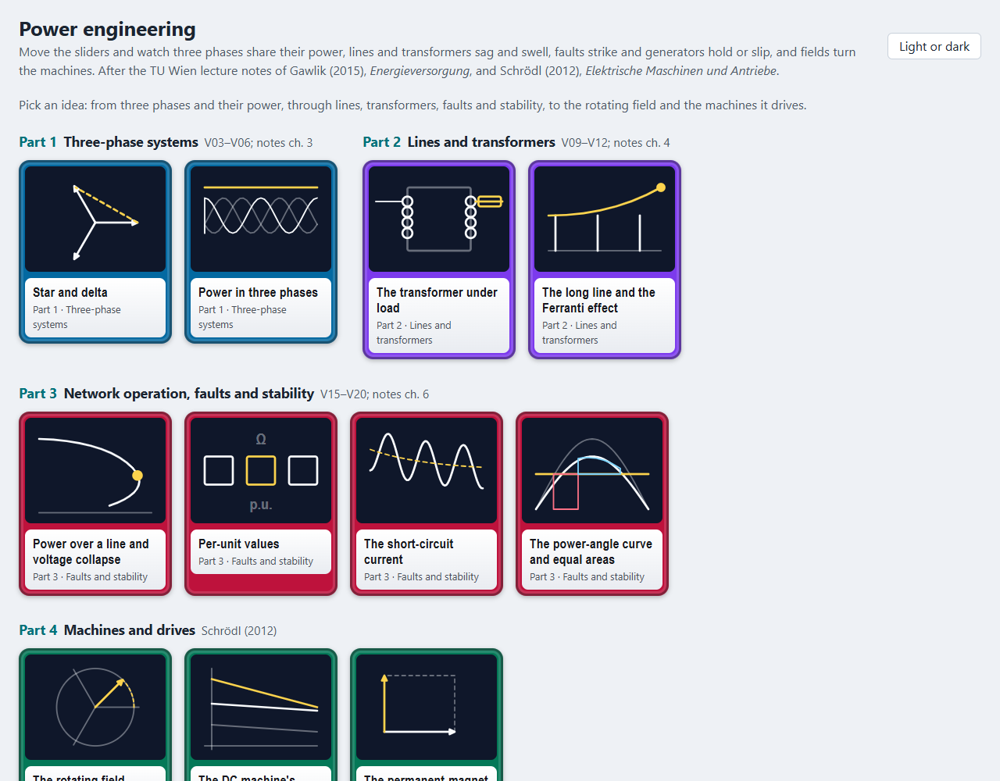
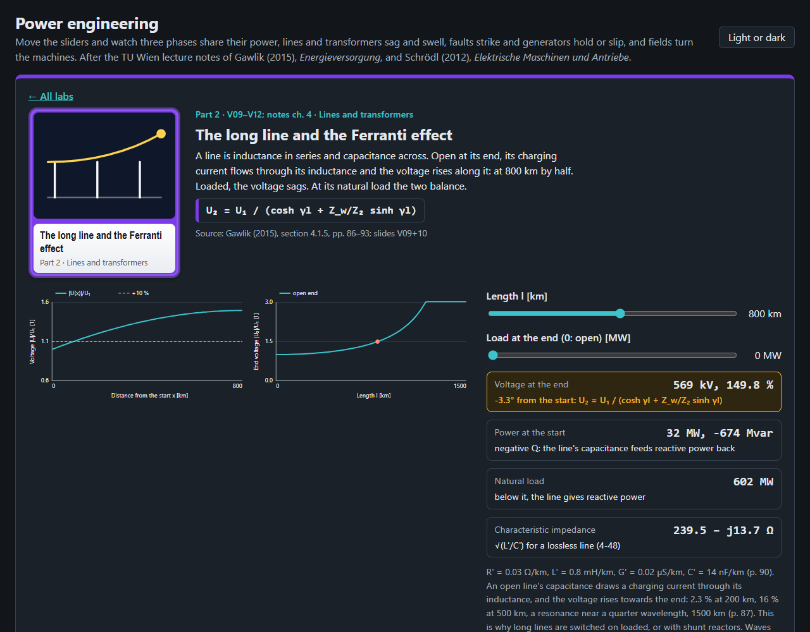

Electrodynamics Lab
Elektrodynamik and Wellenausbreitung, after Prechtl (2010) and Lasser (2012)


Maxwell's equations, potentials, the skin effect, waves, lines, waveguides, antennas, link budgets and fading.
Automation Lab
Automatisierung and Modellbildung, after Kugi (2015) and Kugi et al. (2015)


Transfer functions, Bode and Nyquist, the control loop, state space, sampling, and the models of mechanics and heat.
Signals and Systems Lab
Signale und Systeme 1 and 2, continuous beside discrete, after Prechtl (2010) and Doblinger (2015)


Convolution, correlation, Fourier series and transform, sampling and aliasing, digital filters, DFT and FFT, multirate.
Semiconductors, devices and circuits
Halbleiterphysik, Elektronische Bauelemente and Schaltungstechnik, after Strasser (2015), Hobler (2009) and Zimmermann (2010)


Energy bands, Fermi–Dirac statistics, carrier densities, drift and diffusion, lifetime, absorption, the pn junction, the diode, the bipolar transistor and the MOSFET; amplifier stages, current sources, push-pull stages, the op-amp loop, slew rate and noise.
Special Relativity Lab
Relativitätstheorie, after Einstein (1905)


The Minkowski diagram, simultaneity, moving clocks and rods, adding velocities, and E and B mixing under a boost.
Telecommunications Lab
Telekommunikation, after the slides of Goiser (2016)


Quantisation and PCM, entropy and Huffman coding, line codes, raised-cosine pulses and the eye, the matched filter, repetition and Hamming codes, PSK and QAM in noise, synchronisation errors, and the noise figure.
Power Engineering Lab
Energieversorgung and Maschinen und Antriebe, after Gawlik (2015) and Schrödl (2012)


Star and delta, three-phase power, the transformer under load, the long line and the Ferranti effect, voltage collapse, per-unit values, the short-circuit current, equal areas, the rotating field, the DC machine and the PMSM.